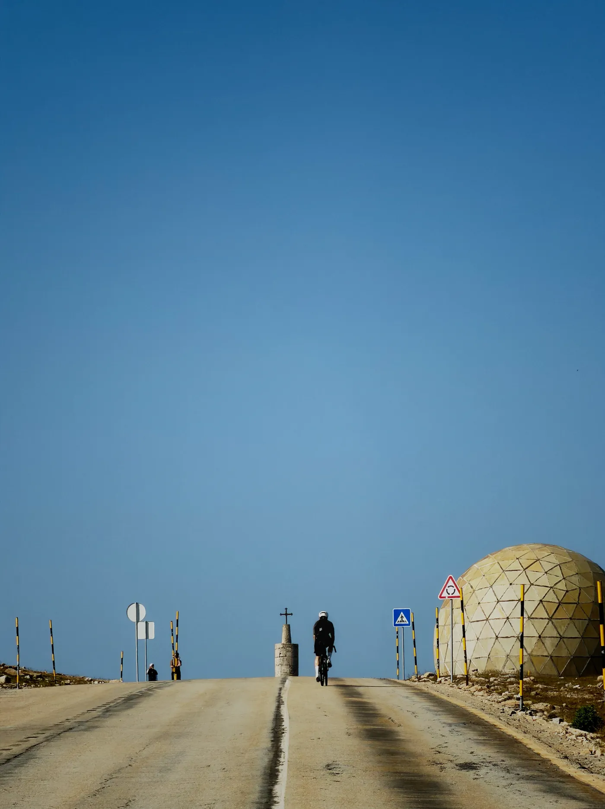
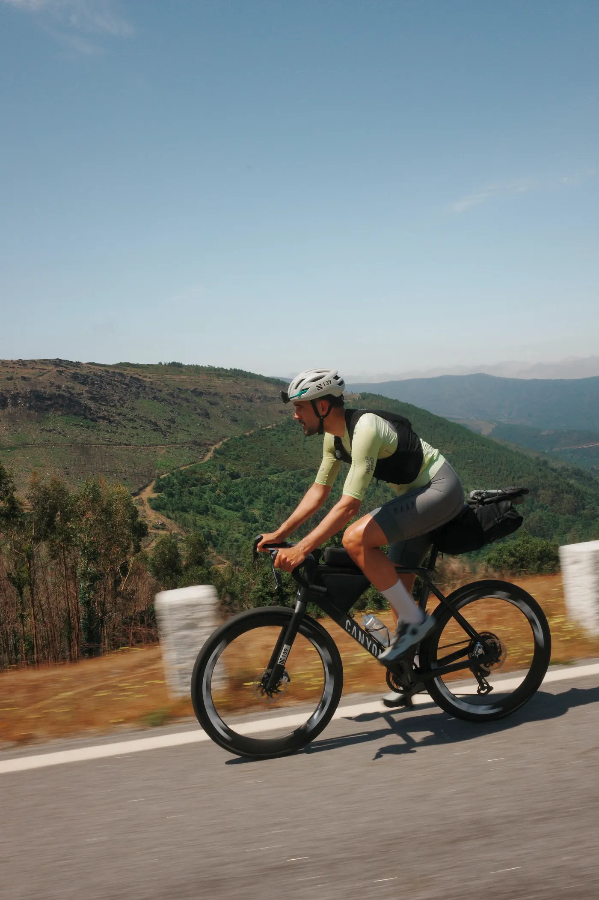
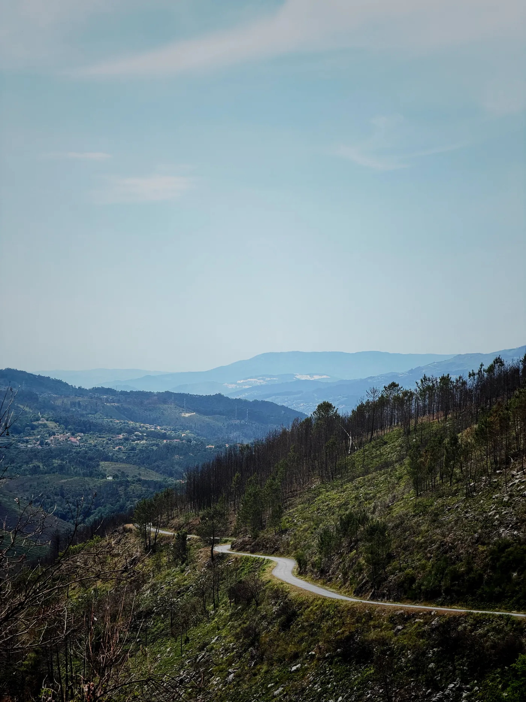
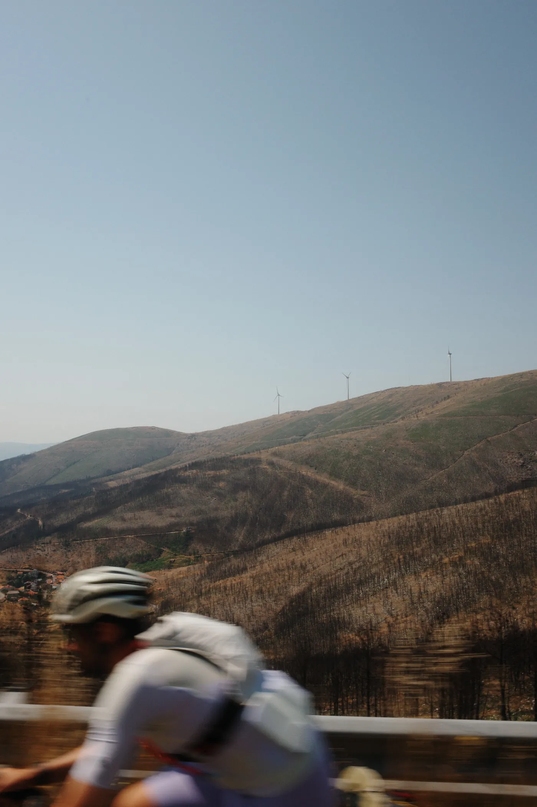
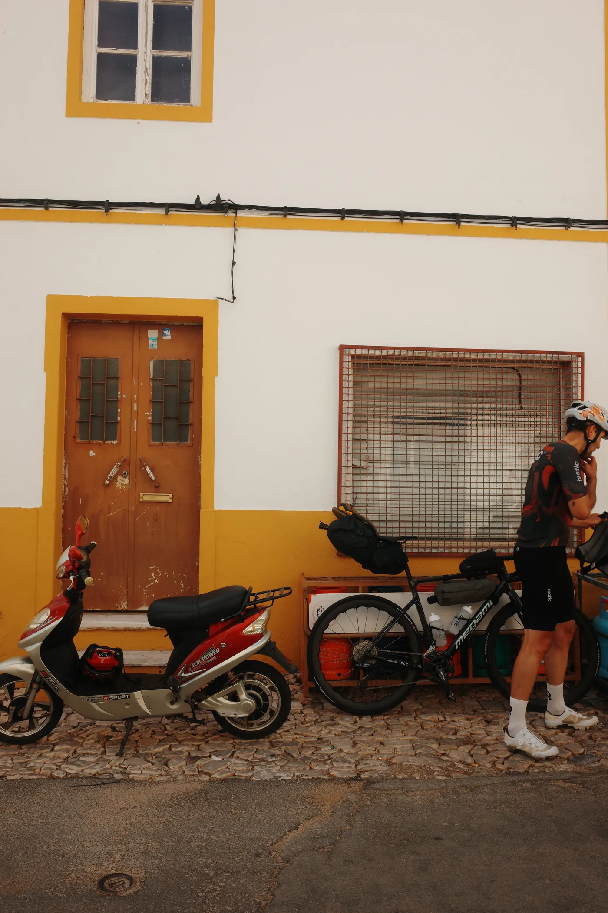
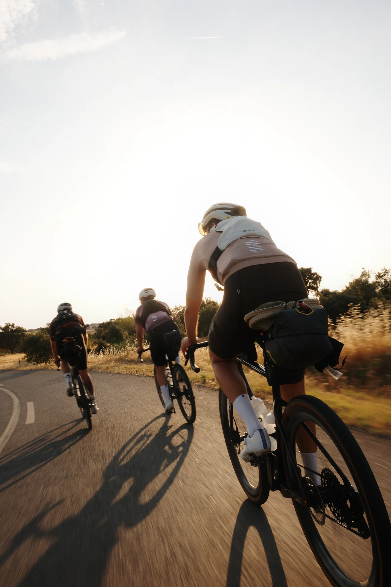

El sexto día llegué al Guadiana, el río que separa Portugal de España por el sur, y paré el crono. Seis días antes había salido del extremo norte, en las montañas del Gerês, ya pegado a la frontera, en el Minho. En medio: 999 km, 15.841 m de desnivel y unos 1.680 TSS metidos en una sola semana.
Todo el mundo me preguntaba cómo había "sobrevivido". Pregunta equivocada: no sobreviví a nada, lo tenía todo organizado. Cada uno de esos seis días era un número que ya conocía meses antes, sobre un gráfico, el día que calculé cuánta carga podía absorber un ciclista con mi forma física, día tras día, sin venirse abajo el cuarto día. Esto es el resumen de ese proceso: los cinco meses de entrenamiento, la carga de cada etapa y las cuentas con los carbohidratos. Si te entrenas tú solo y ya sabes distinguir tu TSS de tu TSB, aquí tienes un ejemplo real que puedes calcar.
Para quién es esto (y qué te vas a llevar)
Si "CTL", "TSB" y "una rampa negativa antes del tapering" te suenan de algo, sigue leyendo: esto no es un diario de viaje. Vas a encontrar la curva real de carga que construyó esa durabilidad, la tabla de carga por etapa con potencia y pulso, y la lógica detrás de la comida. Los números salen de mis propias actividades —FTP 309 W, 81 kg, unos 3,8 W/kg— sin redondear para que quede más bonito.
¿Quieres la plantilla de temporada que usé?
Te mando la hoja de planificación (rampa de CTL + base/build/peak) y la tabla de comida de la Gran Diagonal. Un correo, y luego alguna nota suelta con datos. Nada de spam.
El objetivo: diseñar seis días desde el gráfico, hacia atrás

Un día épico es cuestión de fuerza de voluntad. Seis días seguidos es un asunto de durabilidad, y la durabilidad se construye, no aparece porque sí. Así que empecé a planificar por el final: seis días de más de 280 TSS de media, en terreno entre rompepiernas y montaña, a una intensidad lo bastante contenida como para repetirla al día siguiente.
Esa última condición lo es todo. Si te pasas el primer día, no lo pagas el primer día: lo pagas el cuarto, cuando la fatiga acumulada (ATL) te ha enterrado la forma y todavía te queda una etapa de montaña de 3.000 m por delante. El plan, por tanto, se reducía a dos números: llegar con una carga crónica (CTL) suficientemente alta para que esos ~280 TSS diarios quedaran solo un poco por encima de mi media, y un tope de intensidad bien por debajo del umbral para que la fatiga no se disparara en toda la semana.
Es una semana dura se mire como se mire. Para que ~280 TSS/día fueran sostenibles y no una ruina, quería llegar con la carga crónica alta y algo fresco —no metido en un pozo—. Eso definió la primavera entera.
Los cinco meses de construcción (lo que hizo el gráfico)
La forma física no salió de "acumular kilómetros". Salió de una progresión pensada que podía ver semana a semana, con las sesiones entre semana marcadas por el motor y los fines de semana convirtiendo marchas cicloturistas en carga de entrenamiento.
Gráfico de gestión del rendimiento · temporada 2026MIS DATOS REALES

- Base de invierno (ene–feb). Volumen aeróbico más trabajo estructurado entre semana: resistencia, tempo, sweet spot y los primeros toques de VO2. Un bloque de tres días seguidos en la Costa Blanca, pronto en la temporada, fue un pequeño ensayo de carga en días consecutivos.
- Build (mar–abr). La intensidad se volvió específica: sesiones de umbral y VO2 marcadas por el motor, dos o tres veces por semana, con salidas largas los fines de semana —una marcha UCI de 156 km en marzo, un día de 184 km en abril— que subieron el CTL sin romper la progresión.
- Pico de carga (may). Las tres semanas más duras del año: una marcha de 152 km, luego un día por la Cerdanya de 169 km y 3.628 m, y una "etapa reina" de montaña de 123 km y 2.913 m. Ahí el CTL tocó techo y las piernas pesaban, como tocaba.
- Afinar (principios de jun). Bajó el volumen, quedó algo de intensidad, y dejé que la fatiga se absorbiera para llegar fresco pero en forma. El día antes de empezar hice un pequeño priming —tres esfuerzos y un sprint, 74 TSS— para despertar las piernas, no para entrenar.
Sobre los números
Cada sesión entre semana salía del motor con un objetivo y un margen —por ejemplo, un bloque de VO2 marcado como TSS 47 / IF 0,83, y luego registrado a +3% sobre el plan. De eso trata un modelo determinista: el plan es un número antes de subirte a la bici, y una desviación que puedes leer después. Nada de esto salió de un chatbot dándome charla; era matemática de ciencia del deporte que podía comprobar contra la realidad todos los días.
Etapa por etapa: lo que pedían los números
Aquí tienes la travesía tal cual —archivos reales, sin suavizar nada—. Fíjate en que la potencia media se mantiene deliberadamente baja incluso los días más duros: no es debilidad, es el tope de intensidad haciendo su trabajo para que el día cinco no me pase factura el día seis.
| Etapa | Dist | Desnivel | Movim. | Pot. | FC | kcal | TSS* |
|---|---|---|---|---|---|---|---|
| Día 0 · Priming | 39 km | 460 m | 1:46 | — | — | 840 | 74 |
| Día 1 · Gerês → Minho | 153 km | 3.247 m | 7:31 | 149 W | 131 | 4.502 | 314 |
| Día 2 | 131 km | 2.279 m | 5:56 | 145 W | 123 | 3.452 | 231 |
| Día 3 | 142 km | 2.439 m | 6:15 | 151 W | 125 | 3.788 | 240 |
| Día 4 · Reina · Torre | 183 km | 3.191 m | 8:15 | 144 W | 123 | 4.774 | 314 |
| Día 5 · Alentejo (la más larga) | 222 km | 2.767 m | 8:57 | 138 W | 120 | 4.945 | 322 |
| Día 6 · hacia el Algarve | 167 km | 1.917 m | 6:38 | 149 W | 122 | 3.972 | 258 |
| Total (días 1–6) | 999 km | 15.841 m | 43:32 | — | — | 25.433 | 1.679 |
*Todos los números de aquí —distancia, desnivel, tiempo en movimiento, potencia, pulso, kcal y TSS— salen directamente de los archivos de actividad y del modelo del motor (FTP 309 W). Nada está redondeado ni estimado.
Carga por etapa · Gran DiagonalMIS DATOS REALES
El patrón cuenta la historia. El día 1 fue el más duro en desnivel —3.247 m nada más salir del Gerês, el mayor esfuerzo relativo de la semana—, así que exigió la mayor disciplina para ir suave teniendo las piernas frescas y ganas de apretar. El día 4 fue la etapa reina: la subida a Torre, la carretera más alta de Portugal continental, 19 km y casi 1.400 m de desnivel por la Serra da Estrela. El día 5 fue el más largo, 222 km cruzando el Alentejo —y ahí la potencia media bajó todavía más—: fue el día de mayor carga de toda la semana (322 TSS), rodado a la intensidad más baja. Eso no es una pájara, es gestión: con casi nueve horas de ruta, el daño lo hace la duración, así que el trabajo consistía en gastar lo mínimo por kilómetro y aun así llegar entero.

La comida, a números

Los archivos registraron unas 25.400 kcal quemadas sobre la bici en seis días —unas 4.200 al día, sin contar todo lo que el cuerpo gasta solo por estar vivo y recuperándose—. Eso no se repone comiendo. Así que la comida en varios días seguidos no va de "reponer" energía: va de reducir el déficit lo bastante para que el motor arranque también al día siguiente.
La lógica con la que rodé:
- Sobre la bici: hidratos ajustados a la duración de la etapa, no al apetito. Los días largos de montaña, cerca de lo máximo que puedo absorber por hora; los días cortos, un punto por debajo. Los hidratos son la palanca porque a 6–9 horas diarias, la grasa no cubre los picos de intensidad en las subidas.
- Nada más bajarte de la bici: la ventana de recuperación es real cuando te toca volver a subirte a la bici en menos de 16 horas. Hidratos y proteína enseguida, luego una comida de verdad, y después seguir picando algo. Cada gramo que entra antes de dormir es fatiga que no arrastras a la etapa siguiente.
- Lee la deriva, no las sensaciones: cuando el pulso a una potencia dada empieza a subir día tras día —deriva cardíaca sumada a la fatiga acumulada—, casi siempre es falta de comida antes que pérdida de forma. La solución es comer, no hacerse el héroe.
Lo que me enseñaron los datos

Tres conclusiones honestas. La primera: el tope de intensidad funcionó, el pulso se mantuvo sorprendentemente estable de un día a otro (entre 120 y 131 de media en los seis días), justo lo que quería ver —sin deriva descontrolada, la carga era asumible y la comida más o menos acertada—. La segunda: podría haber llegado algo más fresco; un tapering un poco más largo no me habría costado nada y me habría regalado un mejor primer día. La tercera, y la más importante: nada de esto fue suerte. La semana encajó con el plan porque el plan estaba hecho de números que había puesto a prueba durante cinco meses, no de una sensación que tuve en la salida.
La parte incómoda
Esto lo puede hacer cualquier ciclista que se entrena solo y esté dispuesto a tratar su temporada como un sistema: un objetivo, una progresión, una carga semanal, un tapering. Lo difícil no es rodar: es tener la disciplina de ir suave cuando estás fresco, de descansar cuando el gráfico dice que toca descansar, y de fiarte de un número antes que de una sensación. Al gráfico le da igual lo bien que sientas hoy las piernas.
Haz tus propios números
La curva de CTL, el objetivo de carga semanal, lo planificado frente a lo real de cada sesión: el motor lo calcula todo a partir de tus datos. No es un chatbot que te habla de entrenamiento, es matemática de ciencia del deporte que proyecta tu temporada y te dice qué toca mañana y por qué.
Consigue la plantilla de temporada + la hoja de comida
La rampa de CTL exacta y la estructura base/build/peak de esta travesía, más la tabla de comida —gratis—. Después, alguna nota de entrenamiento con datos a lo largo de la temporada. Date de baja cuando quieras.